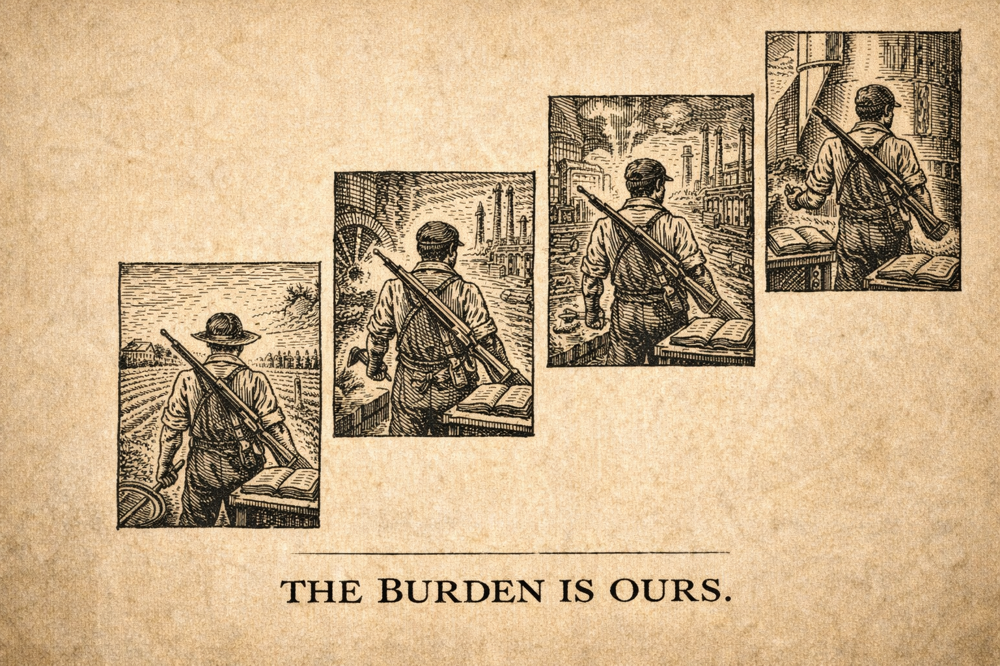
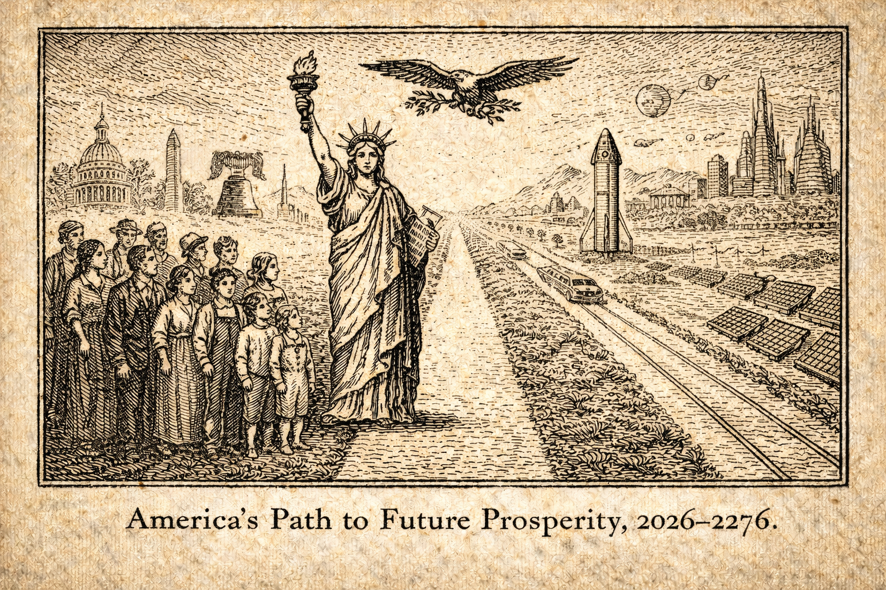

Edition: January 11, 2026
Opening Dispatch
Patriots, behold the hour! As 2026 unfolds, the republic quakes
under the weight of lawlessness unleashed. Tens of thousands flood
Minneapolis streets in raging protests over the fatal ICE shooting
of activist Renee Good—chanting "Abolish ICE," hurling ice and
rocks, blocking roads in defiance of order. Nationwide, over 1,000
rallies erupt against deportations, from Portland to Columbus, with
violence flaring: protesters clashing with officers, vehicles
ramming threats, death threats skyrocketing. DHS reports assaults on
ICE agents up 1,300%, vehicular attacks 3,200%, death threats
8,000%—a direct fruit of radical rhetoric from sanctuary politicians
and cultural scorn for God's appointed sword-bearers.
This is no mere unrest; it's rebellion against divine order. "He
beareth not the sword in vain" (Romans 13:4). The wicked mock
authority, glorify chaos, and invite judgment, while the complacent
slumber. Yet hope stirs: citizen truth-tellers rise on new
frontiers, dismantling legacy media's lies; grit of the founders
endures at our 250th milestone. We anger the wicked by naming their
rebellion, awaken the sleeping with prophetic thunder, equip the
faithful with self-reliance, and point to Christ—the Prince of Peace
who submits yet triumphs over lawlessness.
Strip to roots: limited government, rule of law, biblical
morality—all under assault. Borders mocked, heritage eroded,
families threatened by imported disorder. But God stirs revival amid
shadows. Rise, watchmen! The cry goes forth: restore order, reclaim
sovereignty, or face the furnace of consequences. Common sense
reborn demands vigilance now.

The Plain Truth: America at 250 – The Grit That Built Us Will Build
Tomorrow
By The Working Patriot

Brother, sister—pull up a chair. It's 2026, and this nation of ours
is turning 250 years old. Think on that. In 1776, ordinary
folks—blacksmiths, farmers, millers, men and women with dirt under
their nails—stood up and said enough to tyranny. They risked
everything on a simple truth: that liberty comes from God, not
governments, and that the common man, through hard work and
perseverance, can govern himself.
We've proven it time and again. From scratching out homesteads on
raw frontier to forging steel that won wars and built skyscrapers
that scrape the heavens. We fed the world from our fields, lit the
dark with our inventions, and sent rockets to the moon on the sweat
of shift workers and engineers who clocked in every dawn. It wasn't
handouts or shortcuts—it was callused hands, long hours, and the
stubborn refusal to quit. That's the American character:
perseverance when the crop fails, the factory closes, or the bills
stack high. We answer to our families, our communities, and our God,
not to distant bureaucrats.
Sure, we've got our divisions—red states, blue states, loud
arguments across kitchen tables. But strip it all away, and you'll
find the same abundance underneath: that rock-solid work ethic
running through every American vein. The welder in Ohio and the
rancher in Texas, the nurse in California and the trucker in
Pennsylvania—they all know sunrise means roll out of bed, provide
for your own, and leave the place better for your kids. That's not
politics; that's who we are.
And that's why my heart stirs with real hope as we hit this
milestone. Caution, yes—we've got debts to pay down, borders to
secure, and moral drift to correct. But the possibilities? Endless,
if we lean on what got us here. Hard work and perseverance built
this republic, and they'll rebuild it stronger. Imagine our children
inheriting factories humming again, communities tight-knit and
self-reliant, opportunities flowing from honest labor—not government
schemes, but American grit turned loose.
So here's the quiet rally cry, from one working man to another: Roll
up your sleeves once more. Teach your boys and girls that nothing
worthwhile comes easy, but anything is possible with faith and
sweat. Build that business, fix that neighborhood, stand for what's
right. For their sake—for the grandkids who'll run these fields and
factories—let's pass on an America even greater than the one handed
to us.
Point to Christ, who worked with His hands and never quit the
mission. Common sense reborn: our best days aren't behind us.
They're waiting on the other side of tomorrow's hard work. Let's go
get 'em.

Prophetic Parallels: Tears for the Nation – Revival's Flame in a
Dying Age
By The Old Prophet

My heart is heavy, brethren, as I survey this fractured land in
January 2026. I weep for the unfaithfulness that has brought us
low—the hatred that claimed young Charlie Kirk's life in September
2025, struck down at Utah Valley University by a hand poisoned with
ideological venom. He stood as a watchman for truth among the youth,
unyielding in the cultural fray, and his blood cries out like
Abel's. Yet even in this grief, I see the Sovereign hand stirring:
persecution scatters seed, and revival's quiet fire spreads.
Look—Passion 2026 gathered over 45,000 young souls in worship, a
thunderous roar of praise echoing heaven. Commitment to Christ among
Gen Z men has surged 15 points since 2019; baptisms rise on
campuses, lingering prayers recall Asbury's outpouring. Weary of
chaos and empty promises, the young seek order in eternal truth.
Will you not see it? This is no fleeting emotion but a hunger for
meaning—for lives built on discipline, voluntary suffering, and bold
stand against the dragon of disorder.
Yet peril looms, as foretold: "In the last days perilous times will
come" (2 Timothy 3:1)—men lovers of self, haters of good,
persecutors of the faithful. Antisemitism festers, occult lures
multiply, moral foundations crumble like Jerusalem's walls in my
day. I warned Israel then of judgment for idolatry and rebellion:
exile, sword, famine if they scorned the Lord. So now—nations that
mock truth invite ruin. The spirit behind Kirk's murder stirs
division; reject it, or reap desolation. My soul anguishes over the
rejection I endure, echoing ancient scorn, but truth must be spoken:
without repentance, darkness deepens.
Stand up, then! Speak truth though it costs you—shoulder your cross
daily, order your life with fierce discipline. Chaos devours the
aimless; only the resolute find purpose worth living. Confront the
lie, bear responsibility, build your house on rock—a worthwhile
existence forged in fire.
But hope endures, for the Lord promises restoration: "If My
people... humble themselves and pray... I will heal their land" (2
Chronicles 7:14). And behold the new covenant: "I will put My law in
their minds, and write it on their hearts; and I will be their God"
(Jeremiah 31:33). Despite tears and rejection, He renews—prodigals
return, families strengthen, nations breathe anew.
Point to Christ, slain yet risen, who turns martyrdom to
multiplication. The Almighty weeps with us, yet calls: repent, stand
firm, live truly. Revival burns—fan the flame.
Victory Reports: Legacy Media's Crumbling Monopoly – Citizen
Truth-Tellers Rise on the New Frontier
By The Frontier Builder

Amid the storm of lawlessness and protest, victory dawns on the
information battlefield! Legacy media—CNN, MSNBC, The New York
Times—once monopolized "truth," but in 2026, their empire cracks
under the weight of exposed lies. Trust polls hit rock bottom;
ratings crater as Americans reject propaganda mills that buried
scandals, pivoted on COVID origins without apology, and downplayed
fraud while amplifying edited clips to demonize ICE and border
enforcement.
But behold the triumph: citizen journalists on X, Rumble, and
Substack iterate faster, verify harder, reach millions unfiltered.
Lone posters geolocate empty "daycares" in fraud rings, viral
threads dismantle narratives with receipts, millions fact-check in
real time. Elon Musk's open-source platform demolishes walls—garage
sleuths, trucker podcasters, heartland investigators lead the
charge. This is free enterprise reborn: self-reliant patriots
building parallel systems, innovating around censorship like
pioneers routing blockades.
Wins abound: Media Bias Tracker catalogs lies weekly; boycotts
starve the beast; open platforms empower truth over agenda. The
guilty scorched—retracted stories pile high, coordination leaks
expose coordination. Parallel media ecosystem tips toward dominance:
one major exposure, and the old guard collapses.
Rejoice! "The truth shall make you free" (John 8:32). Citizen
truth-tellers rise—equipping the faithful, angering the wicked,
pointing to Christ who is Truth incarnate. The new frontier belongs
to the vigilant; liberty flourishes where facts win.
The Common Man's Counsel
Reader Question: "Prices are through the roof—food, fuel,
everything. Paycheck's the same as last year. How do I feed the
family and not lose my mind? " – Submitted by Jake, a mechanic in
Michigan
My good Jake,
It is the ancient complaint of the honest laborer, sharpened to a
point by spendthrifts in Washington who treat the treasury as their
private mint. They print money like counterfeiters at a carnival,
then feign surprise when bread costs a king's ransom.
Yet spare me the lamentations. Whining profits less than a
congressman's oath. Keep a merciless account of every dollar; loose
change flees faster than virtue in a palace. Brew your own
coffee—those frothy $7 abominations are for delicate souls who have
never held a torque wrench. Pack lunches, buy in bulk, master the
art of stretching a roast till it begs for mercy.
Grow something edible, even if it's three potatoes in a bucket. It
feeds the body and quietly mocks the corporate grocers who fleece us
all.
Hard truth: if you still dine out thrice weekly while howling about
poverty, you are half the problem. Excise that folly, and savings
will accumulate like rust on an old Chevy. Instill thrift in your
children early—better they learn it from you than from creditors
later.
A republic of such resolute, tight-fisted men would send every
wastrel ruler scurrying. Keep your head clear, your humor dark, and
outlast the fools who bankrupt nations.
Readers: Send your own dilemmas—your name, your trade, your
question. If it pleases you, add your vision for America's next 250
years, the dream you hold for this land and its descendants.
Practical Self-Reliance Corner: The Art of Steady Aims – Goals That
Stick Like Glue
By The Frontier Builder

My good friend, in this busy age of 2026, many a man sets his sights
on grand ventures—shedding the spare tire, launching a trade on the
side, or clearing debts that weigh like lead—only to find them
vanished come spring. 'Tis a common folly, but one easily mended
with plain ingenuity and a dash of stubborn grit. The secret to
goals you truly pursue? Craft them not as lofty castles in the air,
but as sturdy machines: built piece by piece, tested in the field,
and tweaked till they roar.
First, anchor thy aim in solid ground. Ask thyself: Why this
pursuit? Doth it fortify thy family, honor thy Maker's call to
stewardship, or secure thy independence against fickle winds? A goal
without a firm "why" is like a rocket without fuel—spectacular
launch, inevitable crash. (And trust me, I've seen enough explosions
to know: better to iterate on the pad than mid-flight.)
Next, divide the labor into short campaigns—no vague vows of "more
exercise," but pledges like "three brisk walks a week, marking
progress in a simple ledger." Run it for a month, measure the yield,
then refine. Miss the mark? Diagnose the fault calmly—too ambitious?
Life's interruptions?—and adjust the design. As old Ben might say,
"He that can have patience can have what he will," but with a modern
twist: patience plus rapid prototyping beats blind perseverance
every time.
Build checks against sloth: Share thy ledger with a trusted
companion or kin—nothing spurs a man like a friendly wager or
watchful eye. Reward steady progress plainly—a hearty meal earned,
not promised in vain.
Then, link new habits to old reliables. Crave sharper wits through
reading? Tie twenty pages to thy morning brew. 'Tis the compound
interest of discipline: small daily investments grow mighty, without
upheaval.
Setbacks? Laugh at them—they're mere data points. One failed sprint?
"Well, that didn't work—back to the drawing board." Humor in the
grind keeps the fire lit; after all, if building rockets to Mars
taught anything, it's that most explode on the way, but the ones
that land change everything.
Fellow traveler, this method turns wishes into works. In times of
uncertainty, such self-mastery is thy greatest tool—providing bolder
for thine own, leading with quiet strength. Begin modestly today:
Choose one aim, sketch its parts, launch the trial. Persevere with
wit and wisdom, and watch thy fortunes multiply.
Luke 14:28-30
"For which of you, desiring to build a tower, does not first sit
down and count the cost, whether he has enough to complete it?
Otherwise, when he has laid a foundation and is not able to
finish, all who see it begin to mock him, saying, 'This man began
to build and was not able to finish.'"
Prayer of the Week & Closing Call
Prayer: Almighty Architect of order and liberty,
who designed nations with purpose and equipped men to defend the
good—shield our law enforcement, those frontline builders of civil
peace, from the chaos of ambush and scorn. Expose the flaws in
rebellious systems, reinforce the weak points in our society, and
iterate obedience into the hearts of Your people. Grant leaders
clear blueprints for justice, families the raw materials of
resilience, and truth-tellers the tools to prototype a better
tomorrow. Through disciplined repentance, debug this land's errors
and recompile it strong. Point us ever to Christ, the Master
Engineer who turns entropy into eternal design. In His name, Amen.
Call to Action: Builders, launch this edition far
and wide—share it like open-source code. Prototype resilience at
home: secure your foundations, pray daily for the guardians on the
line, network with neighbors into unbreakable communities, and vote
for policies that deregulate freedom and onshore strength.
Experiment boldly, iterate without fear—America's next upgrade
depends on innovators like you. The clock ticks, but the blueprint
for victory is already drawn in Christ. Get building.